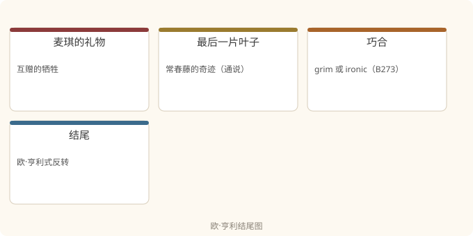

欧·亨利短篇小说选
一、基本信息
| 作者 | 欧·亨利 |
|---|---|
| 成书/出版 | 1906年（Britannica：The Four Million (1906)——含《麦琪的礼物》） O. Henry — Encyclopaedia Britannica（百科全书） |
| 国别/地区 | 美国 |
| 时代 | 近代 · 20世纪初 |
| 体裁 | 短篇小说集 |
| 语言 | 英语 |

欧·亨利结尾图（主题·结构图）
二、创作背景
Britannica（B273）：'From December 1903 to January 1906 he produced a story a week for the New York Sunday World magazine'；'Both The Four Million (1906) and The Trimmed Lamp (1907) explored the lives of the multitude of New York'——'the former contained the widely popular story The Gift of the Magi'。
风格（B273）：'His stories often had surprise endings, a device that became identified with his name'；'expressed the effect of coincidence on character through humour, grim or ironic'。
三、内容脉络
名篇谱系（B273+通说）：《麦琪的礼物》《最后一片叶子》《警察与赞美诗》等。
四、主要人物表
| 人物 | 身份 | 说明 |
|---|---|---|
| 小人物们 | 纽约多众 | 'the multitude of New York'（B273） |
五、主题与艺术特点
- '欧·亨利式结尾'（B273）。
- 巧合对性格的作用（B273：effect of coincidence on character）。
- 小人物的温暖（B273 语境）。
六、影响与评论
- Britannica：'surprise endings, a device that became identified with his name'（B273）。
O. Henry — Encyclopaedia Britannica（百科全书） - Britannica：每周一篇的生产力（B273）。
O. Henry — Encyclopaedia Britannica（百科全书）
七、阅读建议
难点
- '欧·亨利式结尾'的预期管理。
- 1900年代纽约俚语。
- 《欧·亨利短篇小说选》（人民文学出版社王永年译本，通说待核）。
- 英文原版（公有领域）。
先《麦琪的礼物》→《最后一片叶子》。
八、待核实
- 《麦琪的礼物》首发日期核对。
- 《最后一片叶子》篇名（The Last Leaf）核对。
- 王永年译本信息待核。
本页主要来源
相关作品：莫泊桑短篇小说选当我们谈论爱情时我们在谈论什么契诃夫短篇小说选
欧·亨利的其他收录作品：欧·亨利短篇小说选